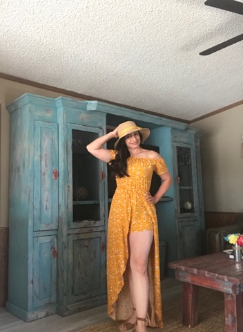

Acerca de mí

Mi nombre completo es María Isela Escárcega Villezcas. Nací y crecí en un pueblo olvidado en Chihuahua México. Desde muy temprana edad me atraían las letras, especialmente la poesía. Estando en tercer grado de primaria, leía tantas veces los cuentos que venían en los libros, que los memorizaba. Luego inventaba historias que iban a dar a los oídos de mis hermanas pequeñas. Entrada mi adolescencia, el destino puso en mis manos un manuscrito con frases de amor; eso sin duda marcó un antes y un después en mi vida. Con el paso de los años aumentó mi pasión por las letras, y se desbordó por completo en el año 2017, cuando hice pública mi locura en distintas redes sociales. Desde entonces no he podido dejar de escribir. Me apasiona tanto hacerlo, que a veces lloro cuando escribo.
Soy una mujer llena de ilusiones y anhelos. Mis sueños son tan ambiciosos que se pasean en la espalda de las águilas.